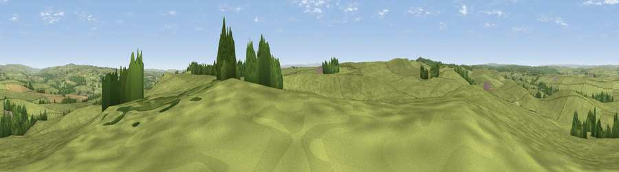

Viewpoint near Wark
#20898 in England · top 50% of its area beats it · near WarkThe view, rendered

A 360° render of this exact spot computed from the terrain model, tree cover and land cover — summer colours, afternoon light, calibrated against photographs of famous viewpoints. Real trees, hedges and buildings will differ in detail.
The panorama
Grey silhouette: terrain skyline in each direction (720 bearings, Earth curvature and refraction included). Dashed green: skyline with trees (+15 m) and buildings (+8 m) as obstacles. Blue strip: how far the ground is visible on each bearing.
Where the view opens
Wedge length = distance to the farthest visible ground on that bearing (vegetation-aware). Rings at 10, 25 and 50 km.
What fills the view
89% grassland · 7% woodland · 3% cropland
Angular shares of the visible panorama (visual magnitude), not map area. Landscape diversity 0.18 (0–1 Shannon).
Key numbers
More beautiful places nearby
The staircase of upgrades: each row has a higher view potential than everything closer. Driving times are estimates from straight-line distance, calibrated against real road routing — check an actual route before setting out.
| Place | Direction | Drive | Score |
|---|---|---|---|
| Viewpoint near Wark | E · 1 km | ~3 min | 56.5 |
| Viewpoint near Wark | ESE · 1 km | ~4 min | 62.1 |
| Viewpoint near Simonburn | ESE · 2 km | ~4 min | 62.5 |
| Viewpoint c11477_7613 | WSW · 4 km | ~9 min | 68.2 |
| Viewpoint near Bardon Mill | SW · 7 km | ~14 min | 71.0 |
| Viewpoint near Greenhaugh | NW · 9 km | ~17 min | 71.2 |
| Viewpoint near Fourstones | SE · 10 km | ~19 min | 71.4 |
| Viewpoint near West Woodburn | NE · 12 km | ~23 min | 73.4 |
55.07393, -2.25016 · source: screening · position refined by local search. Computed location — check access rights before visiting.